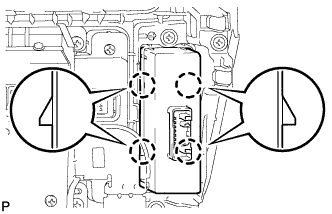

ВСПОМОГАТЕЛЬНЫЙ ИНДИКАТОР > РАЗБОРКА |
| 1. СНИМИТЕ ЦЕНТРАЛЬНЫЙ РЕГУЛЯТОР ТЕМПЕРАТУРЫ ВОЗДУХА В САЛОНЕ С ПАНЕЛИ ПРИБОРОВ В СБОРЕ |
Отцепите 8 захватов и снимите воздуховод с дефлектором.
| 2. СНИМИТЕ ВЫКЛЮЧАТЕЛЬ АВАРИЙНОЙ СИГНАЛИЗАЦИИ В СБОРЕ |
 |
Освободите 2 захвата и снимите выключатель.
| 3. СНИМИТЕ ИНДИКАТОР ПРЕДУПРЕЖДЕНИЯ О НЕДОПУСТИМОЙ ДИСТАНЦИИ В СБОРЕ (для моделей с сенсорной системой помощи при парковке TOYOTA) |
|  |
Освободите 4 захвата и снимите индикатор предупреждения о недопустимой дистанции.